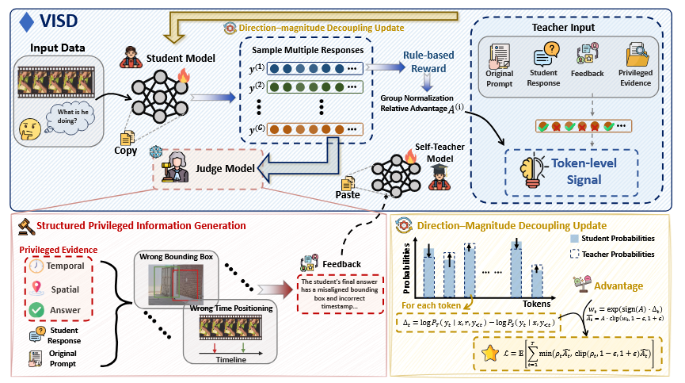
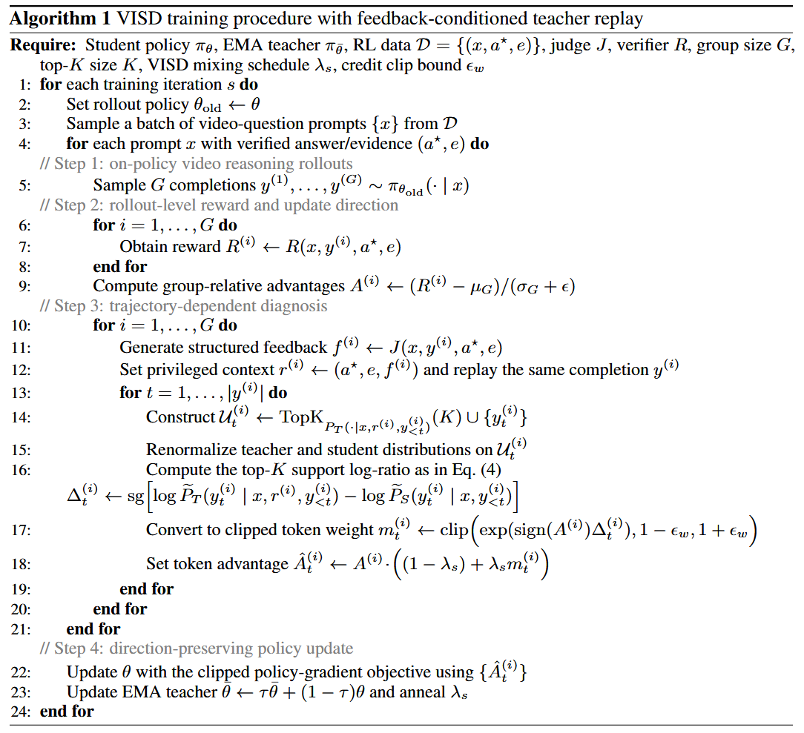
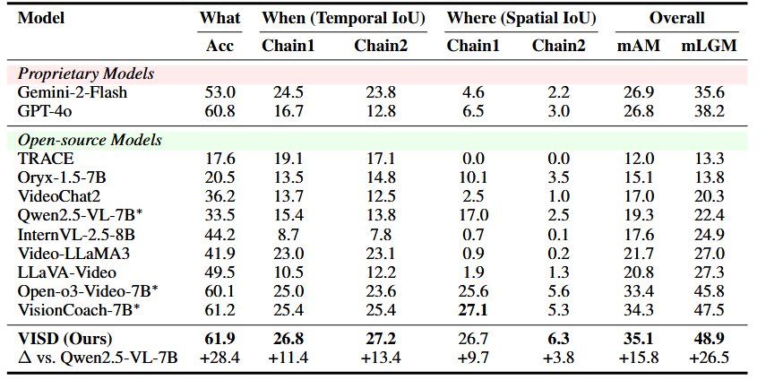
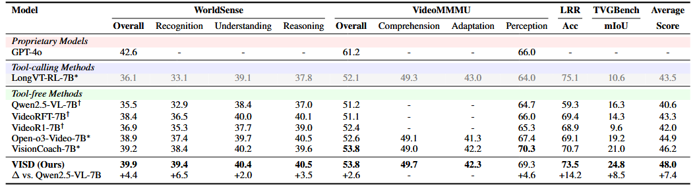
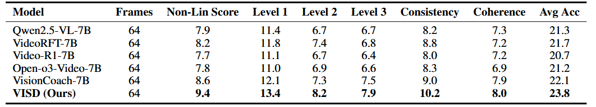
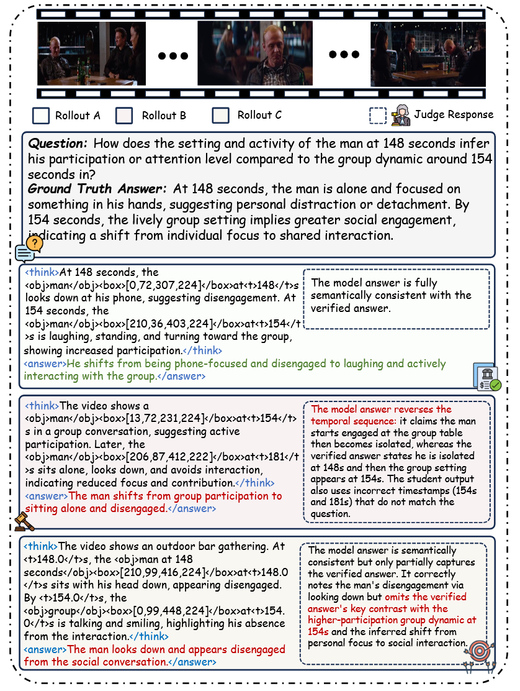
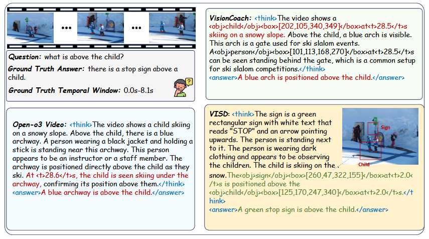
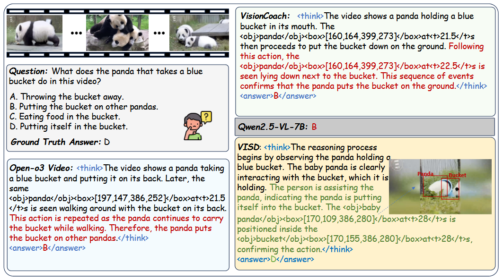
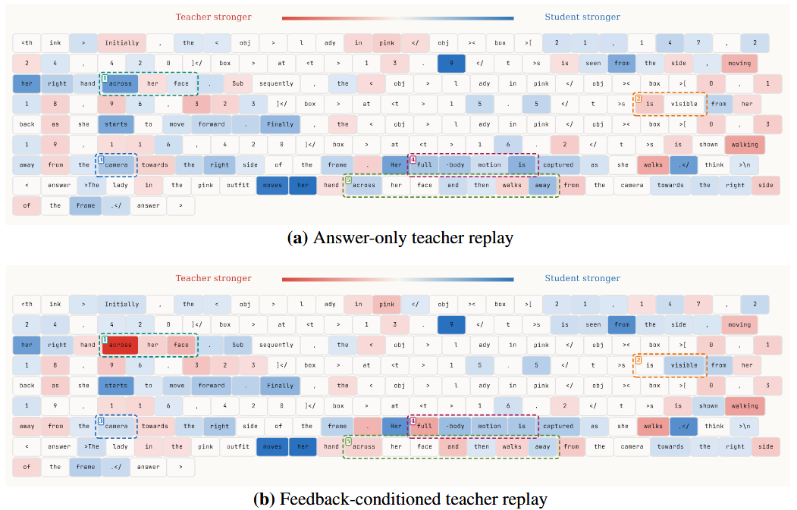

VISD: Enhancing Video Reasoning via Structured Self-Distillation
VISD: Enhancing Video Reasoning via Structured Self-Distillation
1HUST · 2Wuhan University · 3Peking University · 4Tsinghua University
TL;DR
VISD is a structured self-distillation framework that enhances video reasoning by providing diagnostically grounded token-level supervision during training. It leverages a video-aware judge to decompose errors and uses this structured feedback to guide a teacher policy for fine-grained credit assignment. Combining a set of stable self-distillation training paradigms tailored for video reasoning, VISD achieves strong performance and high training efficiency.
Abstract
Training VideoLLMs for complex reasoning remains challenging due to sparse sequence-level rewards and the lack of fine-grained credit assignment over long, temporally grounded reasoning trajectories. While reinforcement learning with ver ifiable rewards (RLVR) provides reliable supervision, it fails to capture token-level contributions, leading to inefficient learning. Conversely, existing self-distillation methods offer dense supervision but lack structure and diagnostic specificity, and often interact unstably with reinforcement learning. In this work, we propose VISD, a structured self-distillation framework that introduces diagnostically mean ingful privileged information for video reasoning. VISD employs a video-aware judge model to decompose reasoning quality into multiple dimensions, includ ing answer correctness, logical consistency, and spatio-temporal grounding, and uses this structured feedback to guide a teacher policy for token-level supervision. To stably integrate dense supervision with RL, we adopt a direction–magnitude decoupling mechanism, where rollout-level advantages computed from rewards de termine update direction, while structured privileged signals modulate token-level update magnitudes. This design enables semantically aligned and fine-grained credit assignment, improving both reasoning faithfulness and training efficiency. Additionally, VISD incorporates curriculum scheduling and EMA-based teacher stabilization to support robust optimization over long video sequences. Experi ments on diverse benchmarks show that VISD consistently outperforms strong baselines, improving answer accuracy and spatio-temporal grounding quality. No tably, VISD reaches these gains with nearly 2× faster convergence in optimization steps, highlighting the effectiveness of structured self supervision in improving both performance and sample efficiency for VideoLLMs
Motivation
To alleviate the sparse-reward limitation of RLVR, self-distillation offers a natural way to provide dense token-level supervision. However, existing methods usually treat additional supervision as unstructured or modality-agnostic signals. When directly applied to VideoLLMs, this leads to two key challenges:
- the supervision lacks diagnostic specificity, making it hard to distinguish logical inconsistency from spatio-temporal grounding failures
- the auxiliary teacher signal may interact unstably with reward-driven optimization.
VISD introduces a video-aware judge that produces structured, diagnostic feedback to guide token-level credit assignment. It further incorporates direction-magnitude decoupling, curriculum scheduling, top-K local support, and EMA stabilization, forming a stable self-distillation framework that better captures spatio-temporal evidence in video reasoning.

Method Overview
To address the lack of diagnostic specificity in token-level supervision, we introduce a video-aware judge that generates diagnostically grounded feedback based on the student's response and privileged information. This feedback explicitly identifies spatio-temporal and logical errors in the reasoning process, enabling the teacher to provide more accurate token-level supervision and better capture key reasoning cues during self-distillation.
To address the instability between self-distillation and reward-driven optimization, we adopt a direction-magnitude decoupled optimization strategy. The rollout-level reward determines the update direction, while the discrepancy between teacher and student token distributions controls the update magnitude. To further stabilize training, we compute token-level differences on a top-K local support, apply curriculum scheduling that gradually anneals to standard GRPO, and maintain the teacher using an EMA update. Together, these designs ensure stable and efficient self-distillation for video reasoning.


Experimental Results



Analysis




Citation
@article{lin2026visd,
title={VISD: Enhancing Video Reasoning via Structured Self-Distillation},
author={Lin, Hao and Lv, Kunyang and Jiang, Xu and Tian, Jingqi and Du, Zhongjing and Ding, Jiayu and Zhang, Qiaoman and Jin, Hongbo},
journal={arXiv preprint arXiv:2605.06094},
year={2026}
}